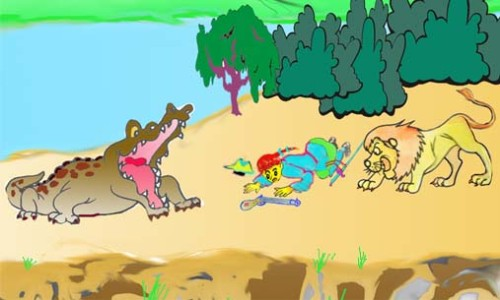
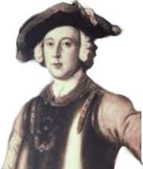

曼喬森男爵驚奇冒險--曼喬森原著，江銘輝譯
這是描述有關曼喬森男爵第一次旅行，旅行中遭遇暴風展開驚奇的故事，被暴風帶到錫蘭 ，戰鬥並征服二個非比尋常的對手，終於回到荷蘭。
幾年前，當我還未長出鬍子宣告已是成年時;換言之，當時我既不是大人也不是小孩，而是介於兩者之間時，雖然我的父親是一位常常旅行的人，但我一再地爭論表明我想出外看看世界的強烈慾望時，卻被我的父母擋住。當我要放棄非凡目標和有趣冒險（我加上去）前，我的願望出現了。我有一位表兄（母親這一方）非常喜歡我，經常稱謂我是位卓越、熱心的好青年，並且非常傾向讓我去滿足我的好奇心。他的口才比我更具有說服力，因此我的父親同意讓我跟他乘船去錫蘭島一趟，他的叔父在那兒擔任多年的總督。
我們帶荷蘭國閣員們發出的急件公文，由阿姆斯特丹乘船出發了。在旅途中唯一值得一提的是我們遭遇到一場驚奇的大風暴。風暴發生的時候，我們正停泊在一個小島上補給木柴和水，那場風暴竟將島上無數的巨樹連根拔起。有些樹重達好幾噸，然而它們照樣被風吹到驚人的高度，就像是小鳥的羽毛漂浮在空中一般，它們離也至少也有五哩。然而，當風暴一平息，它們便垂直地落入各自的位置，再次生根。此外，有一棵最大的樹，發生奇妙的事，當它被吹到空中時，恰巧有一個人和他的太太（非常誠實的一對老夫妻），正在這棵樹上採胡瓜(在地球的這一方，這種食用蔬菜是生長在樹上)。
當這樹落下來時，這對夫婦的體重使樹幹失去平衡，導致水平墜落，落在這個小島的酋長身上，當場把他擊斃了。
這位酋長唯恐屋子倒下來壓到他，於是在風暴中離開他的住屋。當這件幸運的事件發主時，他正好穿過他的花園回家。這裏所說的「幸運」一詞，需要加以解說。這位酋長是一個本性非常貪婪暴虐個性的人。雖然尚未成家，島上的居民在他的壓迫、無恥徵收下都餓得半死。
他向人民搜括來的物品卻在倉庫裹腐敗了，而那些被搜括的苦命窮人，在貧困中度日。雖然暴君的死亡純屬意外，但人民仍然推舉這對採胡瓜的夫婦作為他們的統治者，對這對夫婦意外殺死了暴君表示感激。
在我們修復這場不尋常的風暴中所造成的損壞後，便向這位新統治者和他的夫人告別，然後我們在順風下航向目的地。
大約六個星期後，我們到達錫蘭，在那兒我們受到了深厚的情誼和真誠的禮遇。以下奇特的冒險可能非常有趣。
在錫蘭居住了大約兩個星期以後，我和地方官的一位兄弟參加了一個打獵活動。他是一位強壯又好運動的人，由於他已經習慣了當地的風土（因為他已住在那兒
好幾年了）所以比我更能忍受烈日的熱度;在打獵過程中，當我還在入口時，他已通過密密的樹林，相當有發展。
當我靠近一個引我注意的大池岸邊時，我聽到背後傳來一陣沙沙的噪音。當我回頭一看，我幾乎嚇呆了(誰不會呢?)。我看見一隻獅子正靠過來，顯然在不經過我的同意，就要拿我可憐的軀體滿足牠的食慾。在此恐怖的進退維谷之際，我該怎麼辦呢?我簡直沒有半點思考的時間，而我的槍除了僅裝上射天鵝的子彈外，並且手中也沒有其他子彈了。雖然，我沒想過要用那樣微弱的彈藥去殺死如此龐然的野獸，但是也許我可以用槍彈的爆炸聲嚇嚇牠，或許還可打傷牠。不等牠靠進射擊的距離內，我立刻開槍，而槍彈的爆炸聲的確激怒了牠，因為現在牠已經加快步伐，似乎正以全速向我衝過來。
我企圖逃跑，但是，那只是增加我的困境罷了(如果可能會增加的話 )。當我一轉身，發現一隻大鱷魚正張開大嘴巴，準備迎接我。在我的右方是前面說過的那片池水，而我的左方是一個深深的斷崖，就我經驗所知，底下藏有各種有毒的生物。簡言之，我喪失一切，因為那隻獅子現在以後腿立地，正展開向我撲襲的姿勢!我嚇得不由地跌在地上，以後似乎是牠從我身上躍過。在筆墨無法形容的心境下，我躺了好久，隨時預計感受牠的尖爪利齒降臨到我身體的某一部份。

圖：我前面是兇鱷，後面是猛獅，右方是一大片潭水，左方是斷崖，此時只有伏到地上等死。
我在俯臥的情況下等了幾秒鐘後，我聽到一陣暴亂而不尋常的喧鬧聲，不同於以前曾經侵襲我耳朵的任何聲音。如果我把聲音發自何處告訴你，這也就完全沒有什麼可驚奇的了!傾聽了一段時間後，我冒險抬起頭來看看四周。當我發現獅子在饑渴向前我猛撲過來，我伏到地上，而牠竟跳進鯉魚的嘴裡，真有說不出的喜悅!如前所述，鱷魚的嘴大張著，獅子的頭正插入牠的喉嚨裡，而牠們正掙扎著
互相擺脫。我幸運記得獵刀在我的身邊，用這個工具一刀切斷獅子的頭，牠的身軀落在我的腳下。然後，我用鳥槍的槍托把獅子的頭撞進鱷魚的喉嚨，使牠窒息而死，因為牠吞也吞不去，吐也吐不出來。
把這兩個威猛的敵人徹底稱征服不久之後，我的同伴找到我;因為當他發現我並沒有跟看他進入森林裏時。便回頭過來找我，他擔心我可能迷了路或是遭遇什麼意外了。彼此互相慶賀一番做，我們量-量那隻足足有四十英呎長的鱷魚。
我們很快向地方官報告這項傲人的冒險故事，他馬上送來一輛大型馬車和幾個僕人，將這兩隻動物的屍體運回家。獅子的皮連同獅毛被妥善保存著，之後，我將它來製成一些煙草袋，回到荷蘭時，便贈送給幾位市長。他們為了回報，請求我接受他一千元的金幣。
鱷魚皮按照一般的方式填充製成一個標本。還成為阿姆斯特丹大眾博物院的第一流作品。這裡的解說員加上他們認為的適當說法，向每位參觀者描述整個故事。有些說法已過分誇張超過事實。其中的一種說法是：獅子完全躍入鱷魚體內，由後面正要逃出時，就在牠的頭一伸出來的剎那間，偉大的男爵先生(他們喜歡這樣稱呼我)，便一刀將牠同鱷魚三尺長的尾巴一起砍下。不但如此，因為他們很少去注意事情的真相，所以他們有時又添加說:當鱷魚的尾巴一失掉後，便馬上回頭，奪走男爵手上的獵刀，急切吞進腹中，於是刀子刺穿牠的心臟，牠立刻死亡。
因為那些魯莽的傢伙總是不大關心事實的真相，使得我有時害怕我的真實事跡將來也和他們那些荒謬的杜撰連在一起，淪落到使人不能相信的地步。
The Surprising Adventures of Baron Munchausen原文

( Baron Münchhausen)
The Baron relates an account of his first travels—The astonishing effects of a storm—Arrives at Ceylon; combats and conquers two extraordinary opponents--Returns to Holland.
Some years before my beard announced approaching manhood, or, in other words, when I was neither man nor boy, but between both, I expressed in repeated conversations a strong desire of seeing the world, from which I was discouraged by my parents, though my father had been no inconsiderable traveller himself, as will appear before I have reached the end of my singular, and, I may add, interesting adventures. A cousin, by my mother's side, took a liking to me, often said I was fine forward youth, and was much inclined to gratify my curiosity. His eloquence had more effect than mine, for my father consented to my accompanying him in a voyage to the island of Ceylon, where his uncle had resided as governor many years.
We sailed from Amsterdam with despatches from their High Mightinesses the States of Holland. The only circumstance which happened on our voyage worth relating was the wonderful effects of a storm, which had torn up by the roots a great number of trees of enormous bulk and height, in an island where we lay at anchor to take in wood and water; some of these trees weighed many tons, yet they were carried by the wind so amazingly high, that they appeared like the feathers of small birds floating in the air, for they were at least five miles above the earth: however, as soon as the storm subsided they all fell perpendicularly into their respective places, and took root again, except the largest, which happened, when it was blown into the air, to have a man and his wife, a very honest old couple, upon its branches, gathering cucumbers (in this part of the globe that useful vegetable grows upon trees): the weight of this couple, as the tree descended, over-balanced the trunk, and brought it down in a horizontal position: it fell upon the chief
man of the island, and killed him on the spot; he had quitted his house in the storm, under an apprehension of its falling upon him, and was returning through his own garden when this fortunate accident happened. The word fortunate, here, requires some explanation. This chief was a man of a very avaricious and oppressive disposition, and though he had no family, the natives of the island were half-starved by his oppressive and infamous impositions.
The very goods which he had thus taken from them were spoiling in his stores, while the poor wretches from whom they were plundered were pining in poverty. Though the destruction of this tyrant was accidental, the people chose the cucumber-gatherers for their governors, as a mark of their gratitude for destroying, though accidentally, their late tyrant.
After we had repaired the damages we sustained in this remarkable storm, and taken leave of the new governor and his lady, we sailed with a fair wind for the object of our voyage.
In about six weeks we arrived at Ceylon, where we were received with great marks of friendship and true politeness. The following singular adventures may not prove unentertaining.
After we had resided at Ceylon about a fortnight I accompanied one of the governor's brothers upon a shooting party. He was a strong, athletic man, and being used to that climate (for he had resided there some years), he bore the violent heat of the sun much better than I could; in our excursion he had made a considerable progress through a thick wood when I was only at the entrance.
Near the banks of a large piece of water, which had engaged my attention, I thought I heard a rustling noise behind; on turning about I was almost petrified (as who would not be?) at the sight of a lion, which was evidently approaching with the intention of satisfying his appetite with my poor carcase, and that without asking my consent. What was to be done in this horrible dilemma? I had not even a moment for reflection; my piece was only charged with swan-shot, and I had no other about me: however, though I could have no idea of killing such an animal with that weak kind of ammunition, yet I had some hopes of frightening him by the report, and perhaps of wounding him also. I immediately let fly, without waiting till he was within reach, and the report did but enrage him, for he now quickened his pace, and seemed to approach me full speed: I attempted to escape, but that only added (if an addition could be made) to my distress; for the moment I turned about I found a large crocodile, with his mouth extended almost ready to receive me. On my right hand was the piece of water before mentioned, and on my left a deep precipice, said to have, as I have since learned, a receptacle at the bottom for venomous creatures; in short I
gave myself up as lost, for the lion was now upon his hind-legs, just in the act of seizing me; I fell involuntarily to the ground with fear, and, as it afterwards appeared, he sprang over me. I lay some time in a situation which no language can describe, expecting to feel his teeth or talons in some part of me every moment: after waiting in this prostrate situation a few seconds I heard a violent but unusual noise, different from any sound that had ever before assailed my ears; nor is it at all to be wondered at, when I inform you from whence it proceeded: after listening for some time, I ventured to raise my head and look round, when, to my unspeakable joy, I perceived the lion had, by the eagerness with which he sprung at me, jumped forward, as I fell, into the crocodile's mouth! which, as before observed, was wide open; the head of the one stuck in the throat of the other! and they were struggling to extricate themselves! I fortunately recollected my couteau de chasse, which was by my side; with this instrument I severed the lion's head at one blow, and the body fell at my feet! I then, with the butt-end of my fowling-piece, rammed the head farther into the throat of the crocodile, and destroyed him by suffocation, for he could neither gorge nor eject it.
Soon after I had thus gained a complete victory over my two powerful adversaries, my companion arrived in search of me; for finding I did not follow him into the wood, he returned, apprehending I had lost my way, or met with some accident.
After mutual congratulations, we measured the crocodile, which was just forty feet in length.
As soon as we had related this extraordinary adventure to the governor, he sent a waggon and servants, who brought home the two carcases. The lion's skin was properly preserved, with its hair on, after which it was made into tobacco-pouches, and presented by me, upon our return to Holland, to the burgomasters, who, in return, requested my acceptance of a thousand ducats.
The skin of the crocodile was stuffed in the usual manner, and makes a capital article in their public museum at Amsterdam, where the exhibitor relates the whole story to each spectator, with such additions as he thinks proper. Some of his variations are rather extravagant; one of them is, that the lion jumped quite through the crocodile, and was making his escape at the back door, when, as soon as his head appeared, Monsieur the Great Baron (as he is pleased to call me) cut it off, and three feet of the crocodile's tail along with it; nay, so little attention has this fellow to the truth, that he sometimes adds, as soon as the crocodile missed his tail, he turned about, snatched the couteau de chasse out of Monsieur's hand, and swallowed it with such eagerness that it pierced his heart and killed him immediately!
The little regard which this impudent knave has to veracity makes me sometimes apprehensive that my real facts may fall under suspicion, by being found in company with his confounded inventions.